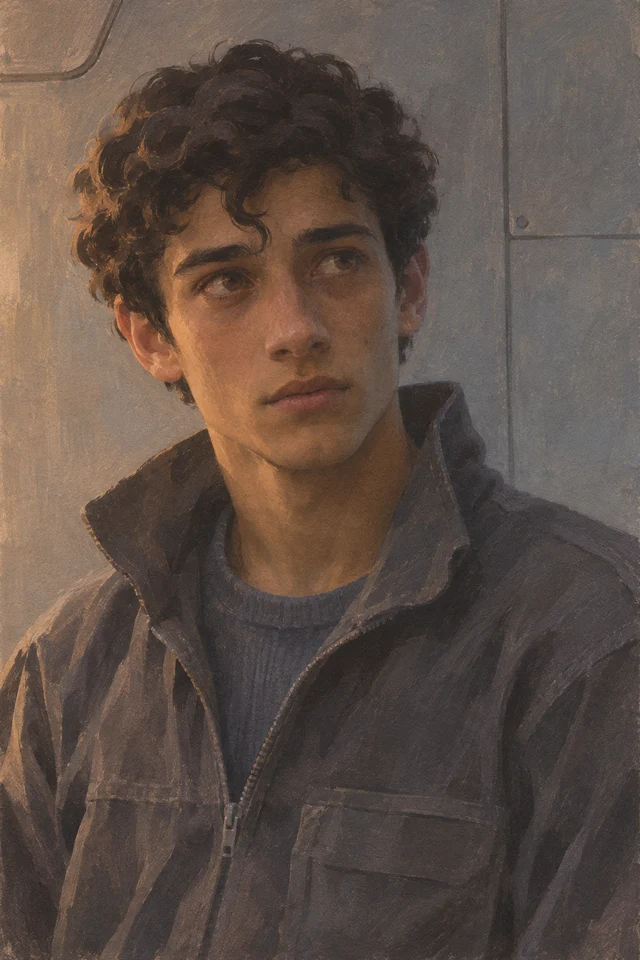
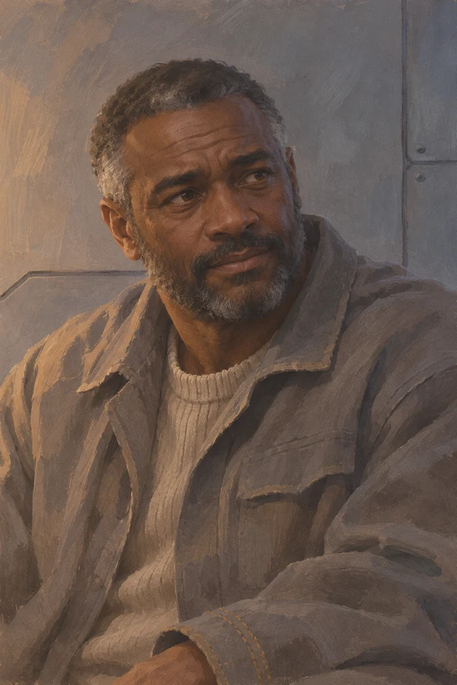

Provisional concept
Elias Voss
An eighteen-year-old survivor whose loneliness draws him toward Ava and strains his bond with Marcus.
Elias’s profile ↗Story navigator
An orbital science-fiction tragedy about survival, dependence, and the people we turn to under pressure.
Chapter 1 · First draft
After freezing during an emergency, Elias retreats to a quiet recess. Marcus finds him there.

Provisional concept
An eighteen-year-old survivor whose loneliness draws him toward Ava and strains his bond with Marcus.
Elias’s profile ↗
Provisional concept
Elias’s mentor remembers prewar Earth and cares for him even when the two disagree.
Marcus’s profile ↗Provisional concept
She oversees habitat operations and watches for small failures that could cascade across sectors.
Lena’s profile ↗Approved face and hair
A holographic interface for a decentralized superintelligence and a source of comfort for Elias.
Ava’s profile ↗